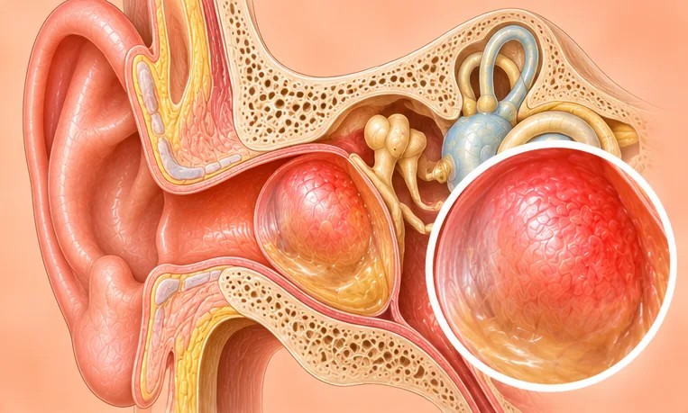

Middle-ear infection
Infection or inflammation of the space behind the eardrum
What it is
The middle ear, the small air space behind the eardrum, becomes inflamed, often after a cold. It can cause ear pain, a blocked feeling and less hearing for a while.
- Behind the eardrum
- Common in young children
- Ear pain, blocked feeling
- Which doctor
- Family doctor, ENT doctor, paediatrician for children
- Common in
- Young children; adults with colds or allergies
- Contagious
- The cold germs behind it can spread; the ear problem does not
- Course
- Often gets better within a few days to a couple of weeks
Common signs

Fever, feeling hotFever (pyrexia) Hard to hear peopleHearing loss 
Feeling sick, nauseaNausea 
Short-tempered, on edgeIrritability
Why it happens
Smoke, haze and strong smellsAirborne irritants
Other causes
- A cold, flu or sore throat that spreads to the ear tube
- Allergies or a blocked nose
- Children's ear tubes are short, so germs pass easily
See a doctor first if
- Fever with stiff neck, strong headache or being very sleepy: go to hospital now
- A baby or small child with a fever or pulling at the ear: see a doctor promptly
- Swelling, redness or pain behind the ear
- Fluid or pus coming from the ear
- Pain or hearing loss that lasts more than a few days
If any apply, please see a doctor before a session.
This page is general information. Please keep taking your normal medicine and keep seeing your doctor.
Keep your normal care
Keep taking your normal medicine and keep seeing your doctor. Our session is a gentle support and does not replace medical care.
Looking after yourself

Drink enough waterAdequate hydration Keep the ear dryEar protection 
Ask your pharmacistPharmacist advice 
Wash your hands oftenHand hygiene
Tell your therapist
- Fever or an active infection
- Pregnancy
- Pacemaker or metal implant
Your therapist will go through this with you before starting.
Related conditions
References: General information based on public health sources such as Mayo Clinic, NHS, Cleveland Clinic and NCBI StatPearls.
Page updated: 2026-10-31